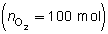
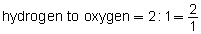
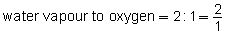
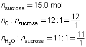

Module 6—Stoichiometry
 Read
Read
When you first learned to balance equations, you may have used a table similar to the following to confirm your work.
Reaction |
2 H2(g) + O2(g) → 2 H2O(g) |
|
Atom |
Number of Atoms Before Reaction |
Number of Atoms After Reaction |
H |
4 (2 molecules of H2, 2 × 2H = 4) |
4 (2 molecules of H2O, 2 × 2H = 4) |
O |
2 (1 molecule of O2, 1 × 2O = 2) |
2 (2 molecules of H2O, 2 × 1O = 2) |
Read “2.3 Balancing Chemical Reaction Equations” on pages 51 to 53 of your textbook. What other ways can the information in a balanced chemical equation be interpreted? As you can see in the table, the coefficients used to balance a chemical equation can refer to the number (or quantity) of each type of particle. Coefficients also refer to chemical quantities, the number of moles—the quantity used to describe the chemical amount of a substance involved in a reaction.
mole ratio: a mathematical statement of the proportion of each substance involved in a chemical process relative to one another
stoichiometry: a method of predicting or analyzing the quantities of the reactants and products participating in a chemical process
One of the most important relationships conveyed in a balanced chemical equation is mole ratio. Mole ratio is a mathematical statement of the proportion of each substance involved in a chemical process relative to one another.
For example, in the reaction 2 H2(g) + O2(g) → 2 H2O(g), the mole ratio of hydrogen to oxygen is 2:1. This ratio shows that twice as many moles of hydrogen than oxygen are needed during the reaction. In terms of the quantity (moles) of hydrogen and oxygen needed to launch the Space Shuttle, failing to place enough hydrogen into the storage tank could prevent the Space Shuttle from reaching orbit.
This example identifies why knowledge of the proportions of substances involved in a chemical process, or stoichiometry, is important. Stoichiometry is a method of predicting or analyzing the quantities of the reactants and products participating in a chemical process. Play the following sound file to hear how this word is pronounced.
Mole ratios that exist in this reaction include the following:
2 H2(g) + O2(g) → 2 H2O(g) |
|
Relationship |
Mole Ratio |
hydrogen to oxygen |
2:1 |
hydrogen to water vapour |
2:2 (or 1:1) |
oxygen to water vapour |
1:2 |
Example 4: If 100 mol of oxygen were to be used in a test rocket engine, how could you use mole ratio to predict the quantities of hydrogen and water vapour involved in the reaction?
Mole ratios from the balanced chemical equation will be used to predict the quantity of hydrogen and oxygen involved when 100 mol of oxygen  is reacted.
Mole ratio of
- 
- 
Predict the quantities of hydrogen gas and water vapour.
The predicted quantities of hydrogen and water vapour are each 200 mol.
 Self-Check
Self-Check
SC 4. The dehydration of sugar can be represented by the following balanced chemical equation.
C12H22O11(s) → 12 C(s) + 11 H2O(g)
Predict the quantity of carbon and water vapour produced by the dehydration of 15.0 mol of sucrose, C12H22O11(s).
SC 5. Predict the quantity of carbon dioxide and water vapour produced by the combustion of 398 mol of octane, C8H18(l). (This is approximately the quantity of gasoline in an automobile fuel tank.)
C8H18(g) + 12.5 O2(g) → 8 CO2(g) + 9 H2O(g)
SC 6. Estimate the quantity of ammonium sulfide required to produce a solution containing 0.253 mol of dissociated sulfide ions.
(NH4)2S(aq) → 2 NH4+(aq) + S2−(aq)
Self-Check Answers
SC 4. C12H22O11(s) → 12 C(s) + 11 H2O(g)
List the known quantities and the mole ratios required.

Predict the quantities of solid carbon and water vapour.
The predicted quantities of solid carbon and water vapour are 180 mol and 165 mol, respectively.
SC 5. C8H18(g) + 12.5 O2(g) → 8 CO2(g) + 9 H2O(g)
Use the mole ratios to predict the desired quantities.
The predicted quantities of carbon dioxide and water vapour are 3.18 × 103 mol and 3.58 × 103 mol, respectively.
SC 6. (NH4)2S(aq) → 2 NH4+(aq) + S2–(aq)
Since the mole ratio is 1:1, the predicted quantity of ammonium sulfide is 0.253 mol.
Read
Examining the quantitative aspects of a chemical reaction can provide an interesting insight. For example, can you identify the significance of the large quantity of carbon dioxide produced by the combustion of octane in question SC 5? Why does there appear to be an increase to the number of moles of the carbon compounds in this reaction? As you will see in the remaining lessons of this module, quantitative relationships are very significant when they relate to technologies that rely on chemical reactions.
Thus far, you have discovered that a great deal of information is represented within a balanced chemical equation. What kind of information does a balanced chemical equation not provide? What assumptions are made when writing or discussing a process represented by a balanced chemical equation?
Read “Chemical Reaction Equations” on pages 278 to 281 of your textbook.